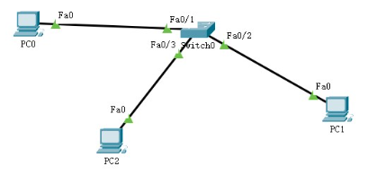

地址解析协议
@ARP- 地址解析协议 ARP – Address Resolution Protocol
- 将 IP 地址解析为以太网 MAC 地址
- 协议栈需求
路由：根据IP地址找到目标主机所在网络
封帧：根据MAC地址找到目标主机
- 过程 Procedure
- PC0知道PC1的IP地址，但不知道PC1的MAC地址；自身的ARP表找不到PC1的MAC地址，因此不能封帧
- PC0先缓存消息，然后以广播的形式发起ARP请求：我的IP地址是192.168.0.1，MAC地址是00D0.5857.5331，我找IP地址是192.168.0.3的主机的MAC地址。收到请回答！
- 除PC0外，PC1和其它主机都会收到这个广播帧
- PC2和PC3分析后发现，广播要找的目标不是自己，丢弃该帧
- PC1分析后，发现是询问自己的：以单播的形式给PC0回一个ARP响应：我是你找的192.168.0.3，我的MAC地址为0030.A313.6DA4；同时将PC0的IP地址和MAC地址保存到自己的ARP表中
- 除PC1外，其它主机都会收到这个单播帧
- 只有PC0发现是发给自己的，于是更新自己的ARP表；其它主机丢弃该单播帧
- 最后封帧之前缓存的消息并发送
- 特点 Features
- IP地址与MAC地址并没有一一对应的关系，且不是永久不变的
- 动态更新：设备重启，网卡更换等
- 有生存周期：超过生存周期的条目将被删除
- 每次ARP协议使用某个条目，该条目的生存周期都要重新计时
- ARP协议不出网


实操
- 搭建拓扑；分配IP地址
- 利用监视工具打开各设备ARP表
- PC0发PDU给PC1，查看ARP表的更新情况
- 清除ARP表重新测试
- 清除ARP表后使用ping 重新 测试，并分析情况
- 测试前，各主机ARP表内容
- 测试后，各主机ARP表内容
[] 实操1

arp -a
arp -d
arp -s
| IP Address | Hardware Address | Interface |
| IP Address | Hardware Address | Interface |
| IP Address | Hardware Address | Interface |
| 192.168.1.2 | 0001.C753.8C96 | FastEthernet0 |
| IP Address | Hardware Address | Interface |
| 192.168.1.1 | 0060.470B.C9AD | FastEthernet0 |


Summary & Homework
- Summary
- ARP的作用
- ARP的解析过程
- Homework
- 独立完成实操1、实操2网络拓扑的搭建和配置
- 根据各主机ARP表，认真分析通信过程中每一个阶段的PDU内容
- 进一步熟悉PT的使用
- 进一步完善整理PT常用命令
- Reading